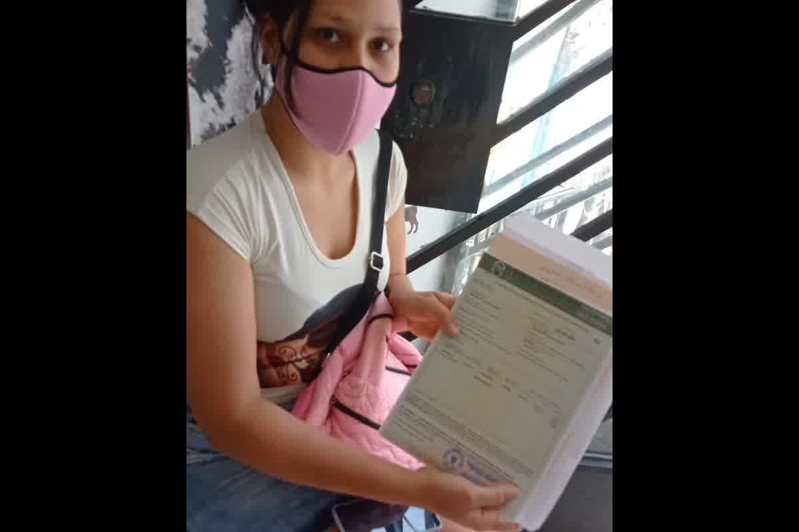
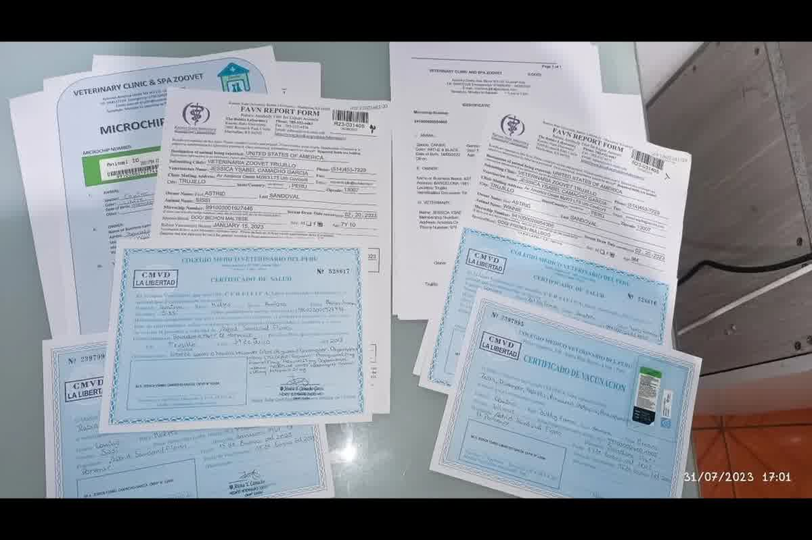

Guía técnica para tramitar el certificado zoosanitario Senasa (CZE) en Trujillo, Perú: secuencia CA07, microchip, vacunas, certificado CMVP, desparasitación e inspección.

El trámite se cae por una razón repetida: la gente llega a Senasa con papeles sueltos y una fecha de vuelo encima. El certificado zoosanitario senasa no se “saca” con un formato; se emite cuando la cadena clínica y documental cierra. En Trujillo lo vemos igual: el error ocurre semanas antes, en la secuencia.
Este proceso tiene un punto sin retorno: la vacuna antirrábica aplicada antes del microchip. Cuando pasa, no hay corrección administrativa que lo salve. Se reinicia desde el inicio y el calendario se mueve meses, no días.
El marco operativo de Senasa para exportación de perros y gatos en Perú está amarrado al TUPA CA07 y al Reglamento Zoosanitario. Da igual si el trámite se inicia en Lima o en Senasa Trujillo: el orden se mantiene. Desde 2026 puedes cargar documentos y pagar tasas por la plataforma digital antes de la inspección física, pero la inspección no desaparece.
El respaldo normativo que sostiene la emisión incluye el Decreto Supremo N.° 051-2000-AG, el Decreto Legislativo N.° 1059 y su reglamento, y el procedimiento CA07 del TUPA de Senasa. En papel parece burocracia; en práctica define qué puede certificar el Estado y qué queda como declaración del veterinario privado. En exportación, esa diferencia decide si el documento pasa control.
La solicitud formal abre el expediente. Después viene la verificación de identidad con microchip ISO 11784/11785, y esa verificación debe sostener todo lo que declaras. Si el número de chip aparece distinto entre el carnet, el certificado CMVP y la solicitud, la inspección se frena hasta aclararlo. En clínica, ese error nace de un lector incompatible o de una transcripción apurada.
El cierre del trámite es presencial: el inspector lee el microchip, revisa el estado clínico y busca ectoparásitos visibles. Si encuentra garrapatas, la inspección se rechaza y se reprograma. La tasa referencial del procedimiento CA07 para la emisión del CZE figura en S/ 97.20, y el certificado se emite cuando el expediente está coherente.

El microchip no es un accesorio; es el primer acto del expediente. Debe estar implantado y leído antes de la vacuna antirrábica. Cuando el carnet muestra una vacuna sin chip previo, Senasa no tiene cómo certificar la trazabilidad del animal que está frente a ellos.
El certificado de vacunación debe mostrar una antirrábica vigente y, para primera dosis, aplicada con antelación suficiente. En el flujo descrito por Senasa, se menciona un mínimo de 30 días antes del viaje para la antirrábica, además de las vacunas core vigentes según especie. Cuando esa cronología no está clara, el certificado zoosanitario senasa no se emite porque la autoridad no puede respaldar una fecha sanitaria que no cierra.
El documento con la ventana temporal más corta es el certificado de salud CMVP emitido por un veterinario colegiado privado. En el esquema operativo citado, su validez máxima es de 10 días desde la emisión hasta la salida. Emitirlo “por adelanto” para tenerlo listo suele terminar en una reemisión a contrarreloj, con un segundo examen clínico incluido.
Vacunación antes del microchip. Es el error de secuencia más costoso porque invalida toda la cadena posterior. En consulta aparece cuando el perro ya tiene su antirrábica “al día”, pero se implantó el chip después para recién pensar en viaje.
Antirrábica aplicada con menos de 30 días de margen respecto a la salida. En Trujillo esto ocurre cuando se compra el pasaje primero y se intenta encajar la medicina después. El resultado es un expediente que no llega a inspección o llega y se rechaza por plazo.
Certificado de salud fuera de ventana y desparasitación sin respaldo completo. La desparasitación que se declara debe estar documentada con fecha, producto, dosis y número de colegiatura del veterinario aplicador dentro de los 30 días previos al viaje. Si falta un dato, Senasa no puede verificar lo que se afirma.
El CZE es el documento con firma del Estado peruano que acredita el estado sanitario del animal ante la autoridad de destino. Eso le da peso formal, pero no reemplaza documentos privados ni requisitos específicos del país al que vas.
El problema clínico más común no es que el animal esté enfermo el día de la inspección; es que la documentación no es íntegra. Por eso la decisión real se toma en la secuencia previa y en el control de plazos, no en la ventanilla.
Define el destino y su lógica regulatoria antes de programar actos clínicos. Hay destinos que exigen RNATT, períodos de espera posteriores y endosos adicionales. Cuando ese requisito aparece tarde, obliga a repetir extracción, recalcular meses y rearmar el expediente completo.
Elige una fecha de salida realista y úsala como ancla para la ventana del certificado CMVP. Si el vuelo cambia, el documento que más sufre es el de 10 días. Planificar con margen no significa emitir antes; significa tener el animal listo y emitir dentro de la ventana correcta.
Confirma que el microchip se lee bien y que el número está escrito igual en todos los documentos. Una discrepancia de un dígito se comporta como una identidad distinta. Eso detiene la inspección porque Senasa certifica un animal identificado, no una descripción.
Una emisión fuera de ventana o una secuencia mal hecha puede dejarte sin embarque aunque el animal esté sano. Zoovet Travel arma el expediente clínico y documental para que el certificado zoosanitario senasa y el CZE se emitan con coherencia desde Trujillo, Perú, sin improvisación de último minuto. Escríbenos por WhatsApp o agenda en consulta para revisar tu caso. Lo que se resuelve en clínica con un mapa de dependencias no se arregla buscando formatos en internet.